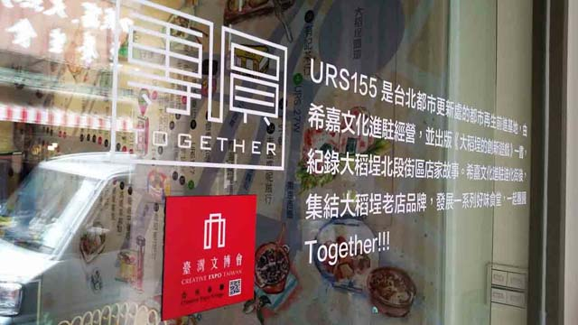
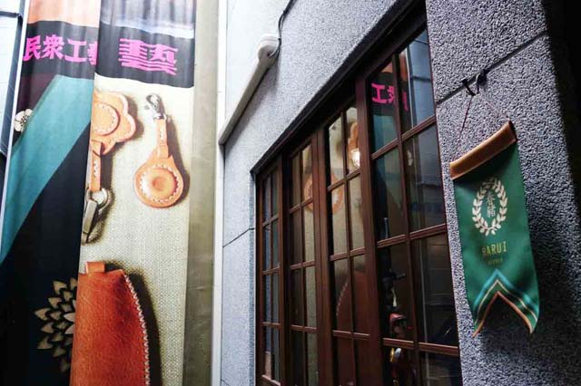
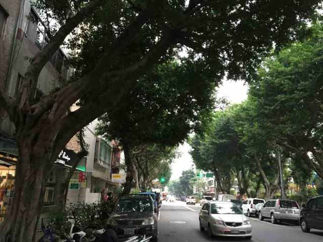
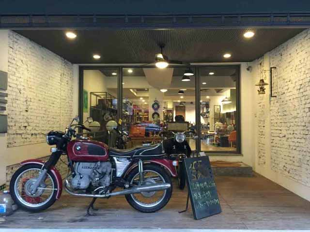
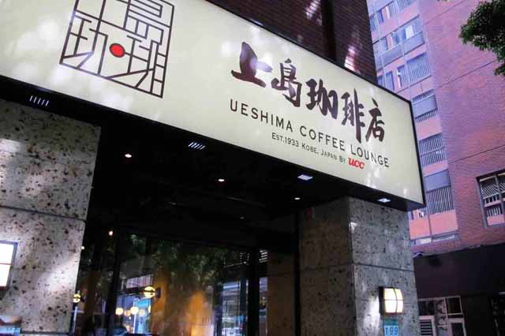
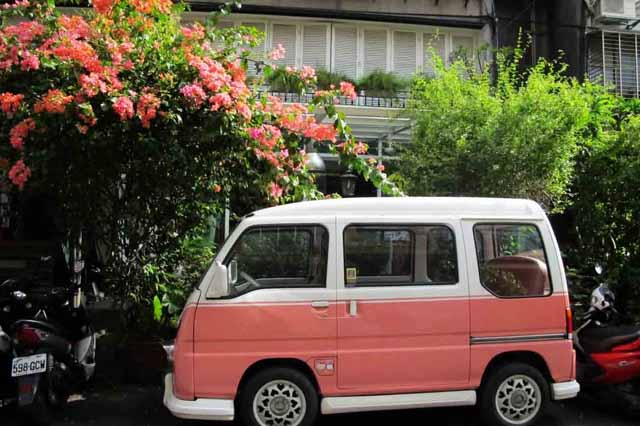

達人的旅遊新觀點


資深部落客，曾擔任中天綜合台《台灣腳逛大陸之魅力城市》以及華視新聞雜誌《達人嬉遊記》節目主持人；現任職於雄獅集團欣傳媒（XinMedia）社群發展部總監。

幾段關於愛情的故事串連，讓我把在臺北市各地的朋友們，介紹給正在看的你和妳。
一、愛情開始的大稻埕
友人說，在臺北，愛情的起點，就是霞海城隍廟。這麼說起來或許不無道理，畢竟，城隍原是城池的守護神，等於也是代表一座城市的民間信仰神格化象徵，而霞海城隍廟裡供奉的月下老人，更是被當做求良緣的神明，不僅當地人信奉，也成為許多年輕的日本女性觀光客，一定要來點香祈求良緣的所在。
大稻埕和迪化街，傳統上來說，是個長輩們辦年貨的老街，但近年來，許多懷抱著夢想的年輕人，因為 URS（URBAN REGENERATION STATION）「都市再生前進基地」的進駐，開始到這充滿了傳統老台北格的街區，來尋找並實現自己的夢想。
例如一開始我提到那「友人」，便是一位叫做小麥的勇敢女子。原本帶著團隊在世界各地創意市集擺攤的她，自述著：「回想決定搬到這一棟建於1850年的紅磚老宅的前夕，原本對未來充滿困惑及未知，小麥來到城隍廟拜拜，當時神明給予他一個『成家立業』的暗示，小麥相信這就是個契機，冥冥中似乎也推動著他們要在大稻埕開創天地。」現在的她，和夫婿 Jerry 一起建立「團圓」這個品牌，發起「團圓大稻埕」活動，讓這個老舊的街區，充滿了新的熱情與活力。
而另一對友人，原本在中研院服務的（另一個）Jerry，則是為了實現太太Febie教小朋友畫畫和語文的夢想，帶著兩人的愛情結晶 Kaya，也在大稻埕「小藝埕」樓上成立了「JFK 繪本屋」；透過這些愛的故事，重新認識一個正在「上升」的街區，相信這裡會成為臺北令一個令旅人流連忘返的所在。
二、清新單戀的民生社區
回想自己的成長過程，民生社區，原不屬於自己生活經驗中的任何一部份，但是隨著高中的一段單戀，從此愛上這個，原是塑造臺北生活風格的社區。當時跟著單戀的學妹，搭著公車來到這裡，頓覺得唯有這樣的社區，才養得出那般氣質的女生啊！雖是數十年前的往事，而後也又曾戀上住在民生社區的對象，無論如何，這個區域，都成了我自己的「臺北愛情地圖」重要的區塊。
不讓「康青龍」、「溫羅汀」和大稻埕等文創街區佔盡光芒，民生社區的富錦街沿線一代，不僅早期就有一些攝影工作室進駐，近年更形成另一個美食與設計結合的創意空間落腳之處。其中的「八角寓所」，如同他們的自述：「在2014年夏天，我們聚集在一個樹很多、腳踏車很多、動物很多的地方，一起建構了這個小小的基地。空間是有限的，夢想卻無遠弗屆。希望在各自做什麼事之餘也一起做點什麼夢。」目前的成員有平面設計師、室內設計師、攝影師、廚師、畫家、活動企劃、導演；其中的小曼和志潭，正是一對共同作夢的情侶。
我自己年輕時代的愛情雖已遠去，可卻又在這個區域，見到了新的夢想與愛情誕生。帶著一種前輩的心情，關愛著這些夢想的長成，難道不也是人生樂事？
三、處處留情的忠孝東路
已故的臺灣文人杜十三，曾在1987年發表過一篇文章，篇名就叫《親愛的忠孝東路》，將上世紀80年代台北東區正在蓬勃發展的都會文化，做了極好的紀錄與詮釋。對我來說，流連東區的年月，正好是高中情竇初開、出社會之後追風逐尚、在現實中受挫徬徨街頭……，前前後後加起來、跨越少年到青年近二十年的歲月；走在路上，彷彿翻過一頁又一頁的青春篇章。
從捷運忠孝復興站開始，往東一路走到市政府站，直線長度大約兩公里、跨越了三個大街區；包含了頂好商圈、統領商圈、國父紀念館等區塊，現在大家也就直接稱它為臺北「東區」。它代表的就是從60年代到90年代，臺灣經濟高度成長的年代，許多跟得上國際潮流都會腳步的景觀或生活趨勢，要不就在這個區域首先出現、或者在這裡被發揚光大；因此也成了都會青年追逐風尚的去處。
某一個陽光的午後，我便沿著這條路線，重新細細辨識各個街區的特色：頂好商圈的兩側，俗稱「名人巷」的大安路從中貫串，分佈著來自各省、各國風味的、從平價到高級的美食餐廳；再往東走，過了敦化南路這條美麗的八線林蔭道路，進入忠孝敦化站的區域，位於路旁的上島咖啡店，這個位置過去是號稱台北第一家時尚Café「IR」的舊址，是許多東區孩子的回憶。
而藏身後巷中的諸多時尚小舖，幾乎每隔一段時間就換了一批新店面、新臉孔，卻始終生生不息、越來越熱鬧，也成為全臺北市永遠具有年輕魅力的街區。往後走到靠近市民大道的忠孝東路四段161、181巷一帶，由「好樣 VVG」品牌開設的餐廳、咖啡館、書店、民宿...等，自成一格，形成了生根於東區的文藝風格小集市。
你幾乎可以說，這裡是將東區的特色，融會於一處而體現出來的菁華。在這裡，我們談的不再只是兩人之間的戀情，而是對於一座城市整體的愛戀。讓我們一起，來走這一趟「臺北愛情故事之旅」。